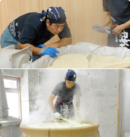
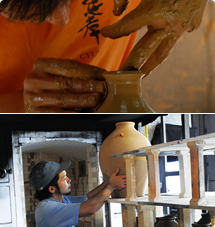
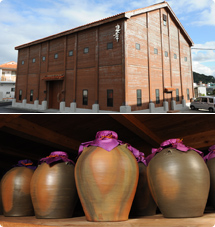

1位起即可参观。若事前预约可以更有效的利用时间。
10人以上的团队、有轮椅者或其他需要护理者时，请一定事先预约。
※当天预约请电话确认。
需要预约者请按下键确认。


手工酿造工厂
在手工酿造泡盛工厂重现了往昔传统的泡盛制作!
一次酿造仅能制出60瓶泡盛酒。
不同于大型机械化工厂、每道工序都由技术高超、经验丰富的酿酒师手工操作， 精心制作而成。
- ①用传统蒸锅蒸煮大米
- ②使用自家制作的忠孝酒醪缸进行酿造
- ③釜式蒸馏(冲绳本岛只有这里才可见到)

忠孝陶窑
可以参观忠孝南蛮粗烧酒瓮的制作过程。由现任董事长大城繁先生创建的泡盛业首个古酒酒瓮陶窑。
最好的古酒酒瓮是高温烧制，不使用任何釉料。在忠孝陶窑用高温制作的古酒酒瓮、酒器全部为手工制作，而且每一个作品的纹样都因窑火各有不同。
忠孝酒造还倡导自琉球王朝时代世代传承下来的五十年古酒、百年古酒--「家酒家宝」的酿制。

木造古酒窖
庄严的空间里飘散着古酒(kusu的酒香和古典音乐，忠孝的木造古酒窖规模是仅次于首里城的木造建筑。
是一个从外观难以想像到的空间。里面贮藏着容量为25000立升的8个巨型酒桶、合计45万瓶的古酒和800个酒瓮。这里既是忠孝酒造引以自豪的设施，也是一个神圣的场所。前来参观的来访者常常来信来电称道「淡淡的酒香和木造建筑的清香加上美妙的古典音乐，留下了一幕难忘的旅途记忆」

| 免费参观 | 免费参观 |
|---|---|
| 参观时间 |
9:00～17:00 (每隔30分钟入场）
参观最后受理时间 17:00
（试饮及商店到18:00）
|
| 参观约需 | 1个小时 |
| 内容 |
|
- ※团队参观人数多时,请跟我们商量
- ※Please call our staff near you for assistance.
- ※希望缩短参观时间时、请通知我们。
- ※Tour reservation for today is closed. (Pottery Factory and Wooden Cellar) Only Chuko Distillery Facility is open until PM 6:00 (DVD Movie・Manually Operated Distillery・Basement Cellar・Free Tasting)
Please contact our staff assistance.